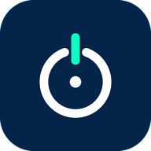
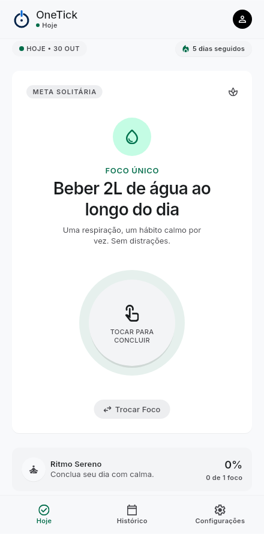
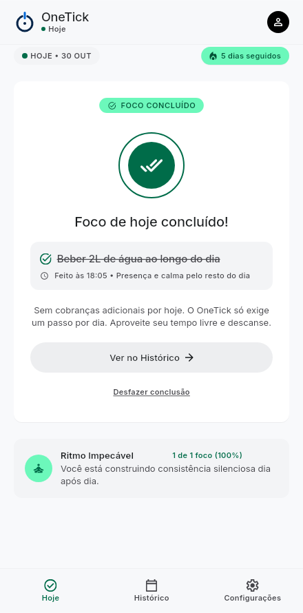
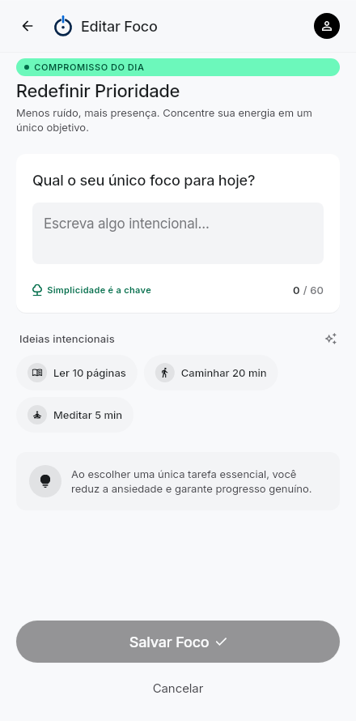
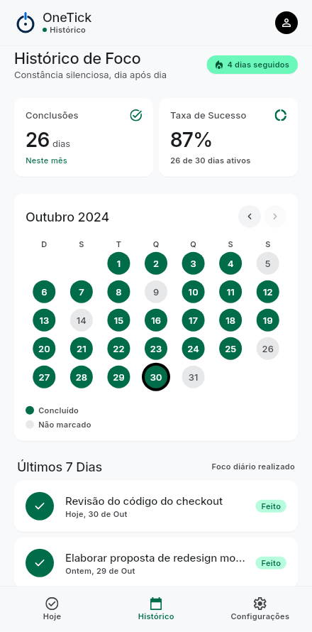
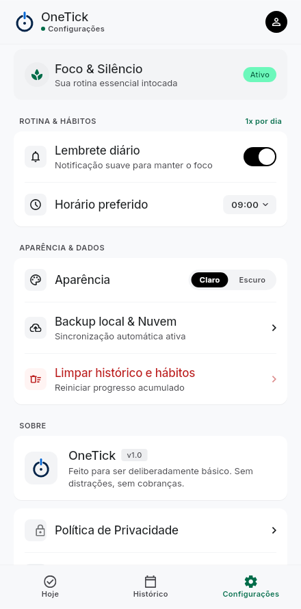
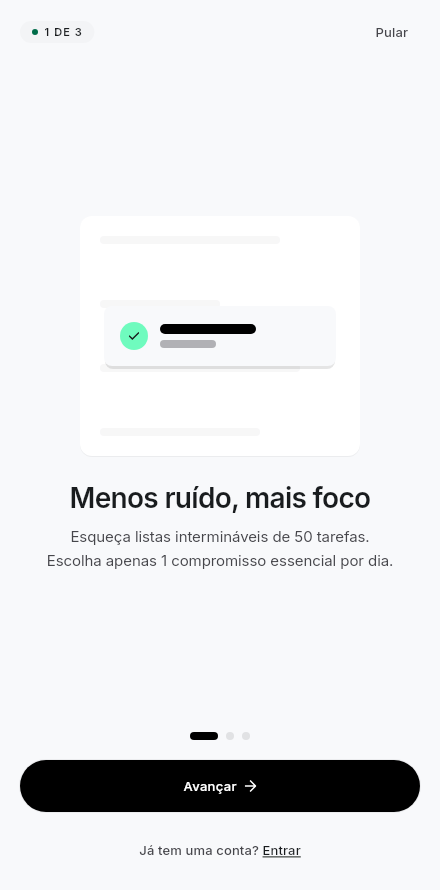

Um foco essencial por dia.
Menos ruído, mais progresso.


Apps de produtividade incentivam dezenas de tarefas por dia. No fim, quase nada é concluído e a sensação é de fracasso.
Listas de 30, 50 itens dispersam a atenção e escondem o que realmente importa.
Notificações e cobranças constantes geram ansiedade em vez de foco.
Sem sensação de progresso, o hábito some em poucos dias.
O OneTick pede só uma prioridade por dia. Um toque conclui. O histórico mostra a constância, sem cobrança.


De manhã, escolha o compromisso essencial do dia ou use uma ideia pronta: ler 10 páginas, caminhar 20 minutos, meditar 5 minutos.
Fez? Um toque no círculo e o dia está ganho. Sem cobranças adicionais: o resto do dia é livre.
O histórico mostra os dias concluídos, a taxa de sucesso e a sequência. A constância vira motivação.
Abre, conclui e desfaz offline. Sincroniza sozinho quando a conexão volta.
Sem anúncios. Termos visíveis antes do cadastro e exclusão da conta pelo próprio app (LGPD).
E-mail e senha ou conta Google, com a foto do perfil no app.
Tema escuro com contraste medido para leitura confortável à noite.

Flutter para Android e iOS, Firebase como back-end seguro e Clean Architecture para manter cada parte independente e testável.
Publicação na Google Play e App Store, com testes no iOS e validação final do tema escuro.
Widget na tela inicial, conquistas por sequência e resumo semanal da constância.
Versão web, lembretes inteligentes por horário de uso e foco compartilhado com amigos.
github.com/dutrathiagodev/onetick
